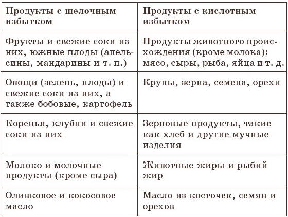

Практика раздельного питания

Когда организм освободился от шлаков, которыми раньше был наполнен, поднимается настроение и человеку открывается новый, счастливый мир.
При раздельном питании необходимо соблюдать три важных условия.
1. Правильный выбор продуктов питания.
Здесь надо придерживаться рекомендаций доктора Бирхера-Беннера – больше использовать продукты, являющиеся аккумуляторами 1?го порядка. Это в основном свежая растительная пища: овощи (листовые и корнеплоды), фрукты, орехи. Особое внимание надо уделять употреблению свежих соков, особенно на первом этапе, чтобы быстрее вымыть шлаки и токсины из организма.
2. Ощелачивание организма в течение дня.
Питаться рекомендуется так, чтобы в организме создавался щелочной избыток от принятой за день пищи.
Щелочеобразователями являются продукты, в которых преобладают такие минералы, как натрий, калий, кальций и магний. Это в основном свежие овощи и фрукты, а также свежие соки из них.
Кислотообразователями являются продукты, в которых преобладают фосфор, хлор и сера. Это в основном крупы, мясные продукты, а также продукты, прошедшие термическую обработку (даже те же овощи, термически обработанные, становятся кислотообразующими).
Для того чтобы надежно ощелачивать организм, что особенно ценно при ряде заболеваний, нужно около 80% дневного рациона употреблять в сыром виде (свежие соки, овощи, фрукты, салаты, слегка тушенные овощи). И всего лишь 20% отводится на белковые продукты животного происхождения (мясо, рыба, сыр) и зерновые (каши, хлеб). Практика показала, что соотношение 70 : 30 является очень хорошим показателем.
Какие продукты питания являются более «щелочными» и какие «кислыми», видно из нижеследующей таблицы.
Чтобы сохранить щелочной избыток в организме, а значит, создать лечебные предпосылки, следует употреблять в пищу большее количество продуктов, указанных в левой части таблицы. Для кислотного избытка годятся продукты, указанные в правой части таблицы.
Таблица 1

3. Соблюдение принципа раздельного употребления продуктов питания.
Ранее уже указывалось, почему некоторые продукты необходимо принимать отдельно от других. Кратко повторю, что это правило способствует лучшему течению пищеварительного процесса, усвоению переваренного, экономии жизненной энергии организма, которая используется на лечебные процессы или укрепление организма.
Главный секрет раздельного питания состоит в том, чтобы знать, какие пищевые продукты можно совмещать в одном приеме пищи и какие нельзя.
Запрещается в одном приеме смешивать щелочеизбыточные продукты с кислотоизбыточными.
Пищевые продукты, требующие щелочных условий для своего переваривания
Все злаковые: пшеница, рожь, овес, ячмень, просо, кукуруза, рис, гречиха и т. д.
Все мучные изделия: хлеб, макароны, крупы, панировочные сухари, мука.
Овощи, богатые углеводами (свыше 10%): картофель, топинамбур, пастернак, репа, зеленая капуста.
Южные фрукты, богатые углеводами: финики, инжир, бананы.
Сладости: пчелиный мед, сиропы, нерафинированный сахар, варенья.
Пищевые продукты, требующие кислых условий для своего переваривания
Все сорта мяса, потроха.
Все сорта рыбы и продукты животного происхождения, такие как раки, омары, креветки и т. д.
Яйца.
Молоко, сыр жирностью до 55%.
Все домашние сорта фруктов (семечковые и косточковые плоды, ягоды).
Цитрусовые (грейпфруты, апельсины, мандарины, лимоны).
Ананасы, дыни.
Пищевые продукты, требующие как щелочных, так и кислых условий для своего переваривания
Наряду с продуктами, которые требуют кислых или щелочных условий для своего переваривания, существуют нейтральные продукты. Они требуют процесса пищеварения как в кислой, так и в щелочной среде и могут смешиваться с любыми продуктами. Эта группа продуктов представляет собой наибольшую часть дневного рациона питания. Это почти все сорта овощей, которые натуропаты особенно рекомендуют к употреблению, а также жиры и масла.
К нейтральной группе продуктов относятся:
а) все листовые овощи и салаты;
б) все овощи, дающие побеги;
в) все сорта репы и редьки;
г) все сорта лука;
д) зелень и все сорта капусты, за исключением зеленой;
е) зеленые стручковые растения;
ж) плоды овощных растений (красный перец, томаты и др.);
з) грибы;
и) пивные дрожжи, водоросли, желатин;
к) орехи;
л) все животные и растительные масла, жиры;
м) творог и сыр жирностью более 60%.